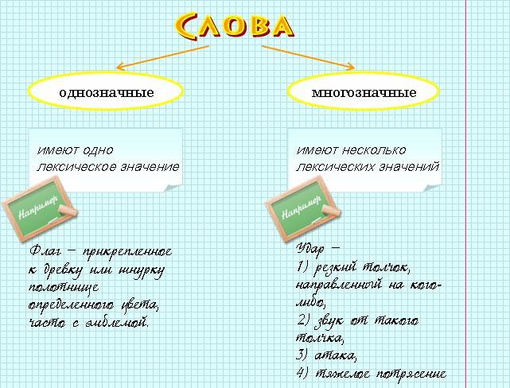
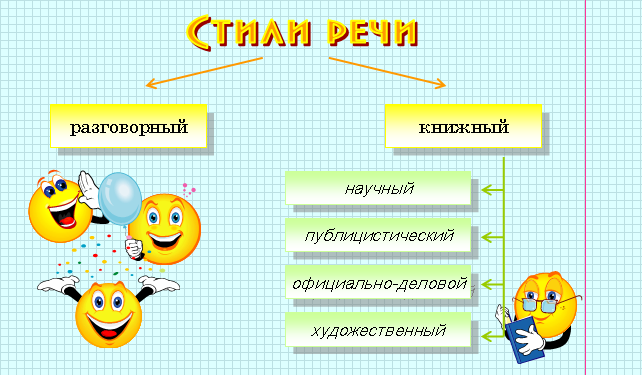

Лексика изучается в особом разделе языкознания – лексикологии.
|
Лексика – это словарный
состав языка, совокупность всех слов языка. Лексика изучается в особом разделе языкознания – лексикологии. |
|
Слово – это мельчайшая значимая единица языка. Слова – это такие языковые единицы, которые служат для обозначения наших понятий и представлений о предметах и явлениях окружающего мира, а также об отношениях между ними. |
 |
Слово: весна грамматическое значение, выраженное в окончании: имя существительное женского рода в именительном падеже, единственном числе |

 |
прямое значение – основное лексическое значение | |
покрыть (= накрыть) – основное значение (покрыть одеялом постель) |
|
переносное значение – вторичное значение, которое появляется в результате переносного употребления | |
покрыть (= возместить) – переносное значение (покрыть расходы) |
|
Синонимы – это слова, имеющие одинаковые или близкие значения и относящиеся к одной и то же части речи. Синонимы по-разному называют одно и то же понятие. |
|
луна – месяц |
|
большой – огромный – громадный (основное слово большой), убегать – удирать – улепетывать (основное слово – убегать) |
|
Пушкин – солнце нашей литературы. Он является создателем русского литературного языка. Великий поэт оставил нам в наследство замечательные образцы художественной речи. |
|
Антонимы – это слова одной части речи с противоположным лексическим значением. |
|
правда – ложь, поднимать – опускать, смеяться – плакать. |
|
Родная сторона – мать, чужая – мачеха. |
|
Омонимы – это слова, одинаковые по звучанию, но различные по значению. |
|
Обычно это слова одной части речи | |
ключ (= родник) – ключ (= приспособление для открывания и закрывания замка) |
|
Омонимы могут относиться к разным частям речи | |
Русская печь (сущ.) – печь (глаг.) пироги |
|
Паронимы – это однокоренные слова, похожие (но не одинаковые) по звучанию и различные по значению. |
|
одеть ребенка – надеть ботинки. |
|
Устаревшая лексика (архаизмы) – это слова, которые не употребляются в современном русском языке. |
|
дьяк, выя, цирюльник |
|
Неологизмы – новые слова, возникающие в языке. В каждую эпоху существуют свои неологизмы. |
|
спутник (неологизм 1960-х годов), домофон (современный неологизм) |
|
Заимствованные слова – слова иноязычного происхождения, которые полностью освоены русским языком. |
|
кафе, шофер, шоссе |
|
Фразеология – это раздел науки о языке, изучающий фразеологизмы, пословицы, поговорки, крылатые выражения. |
|
Фразеологизмы – это устойчивые сочетания слов, близкие по значению одному слову. |
|
на краю света - далеко |
|
Стиль речи – это система языковых элементов и форм (лексических, фонетических, грамматических), которые используются в определенной сфере общения. |

|
Разговорный стиль – это стиль повседневного общения. Его отличают непринужденность, неподготовленность, эмоциональность. |
|
Надо было сильно спешить потому, что бой приближался к нам: слева чьи-то танки гремят, справа стрельба идет, впереди стрельба, и уже начало попахивать жареным. |
|
Научный стиль – это стиль книг, статей, исследований, посвященных отдельным проблемам науки. Для него характерно использование терминологии. Язык научной литературы точен и краток, он лишен многозначности, образных выражений. |
|
В лечебных дозах пчелиный яд действует благотворно на ряд систем и органов. Он расширяет капилляры и мелкие артерии, увеличивая тем самым приток крови к органам и способствуя обмену веществ в них. |
|
Публицистический стиль – стиль речи, используемый в общественной, культурно-политической деятельности. Это стиль выступлений, газетных и журнальных статей, книг, посвященных актуальным проблемам общественной жизни. Для него характерно использование общественно-политической терминологии, лозунгов, призывов, риторических вопросов. |
|
Театр! Любите ли вы театр так, как я люблю его, то есть всеми силами души вашей, со всем энтузиазмом, со всем исступлением, к которому только способна падкая молодость, жадная и страстная до впечатлений изящного? |
|
Официально-деловой стиль используется в практике государственных предприятий и учреждений при составлении распорядительной документации (письма, приказы, инструкции, расписки, доверенности и т.д.) Для деловой речи характерно использование официальной терминологии, устойчивых речевых оборотов. |
|
Заместителю
директора
ВНИИКИ Иванову И. И. Смирнова С. С. Прошу предоставить мне очередной отпуск с 15.08.08 по 1.09.08 С.С. Смирнов 10.08.08 |
|
Художественный стиль – это стиль художественный произведений (как прозаических, так и поэтических). Главная особенность художественного стиля – его способность вбирать в себя элементы всех других стилей. |
|
Разрешите
доложить
Коротко и просто: Я большой охотник жить Лет до девяноста. |